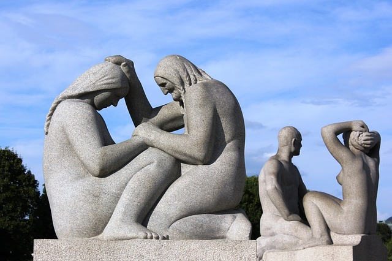

Culture

Monuments célèbres
Rådhuset, l'hôtel de Ville, où se tient annuellement la cérémonie publique du prix Nobel de la paix. Nobels Fredssenter, le Centre Nobel de la Paix, à la mémoire de plus de cent ans de prix Nobel de la paix et des conflits dans le monde. Akershus festning, la citadelle d'Akershus : centre de commandement militaire, mais surtout ensemble architectural et espace ouverts au public, enchâssés entre deux des baies d'Oslo (Pipervika et Bjørvika). Det Kongelige Slott, le Palais royal. Stortinget, le Parlement. Frognerparken, domaine de 40 hectares abritant un parc arboré, avec l'ensemble sculpté et dessiné par Gustav Vigeland. Holmenkollen (tremplin), le tremplin de saut à ski de Holmenkollen, son « arène » et le musée du ski où est montré le plus ancien ski intact au monde (environ 4 000 ans), une chapelle (Holmenkollen kapell) et, un peu plus haut (à Voksenkollen), Kongsseteren (la cabane du Roi) se dressent à proximité. Tryvannstårnet', la tour de Tryvann, dont le sommet culmine à 529 m au-dessus de la mer, couronne un lieu de villégiature dominant Oslo et la naissance de son fjord, et d'où partent pistes de ski alpin et nordique. Operaen, le nouvel Opéra d'Oslo, inauguré en avril 2008 dans le quartier de Bjørvika. Nationaltheatret, le Théâtre national d'Oslo. Oslo Domkirke, la Cathédrale d'Oslo, inaugurée en 1697.
Musée
- Le Musée national, de 1882
- Munch-museet' (musée Munch), consacré à l'œuvre du peintre norvégien Edvard Munch.
- Musée d'art contemporain Astrup Fearnley, musée privé d'art contemporain.
- Jødisk Museum, musée juif d'Oslo, qui présente l'histoire et la culture des juifs de Norvège.